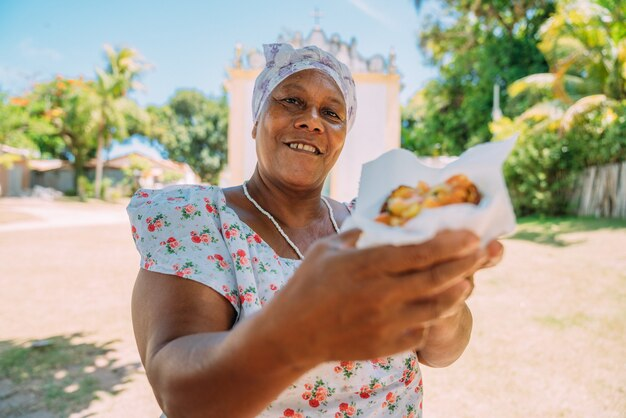
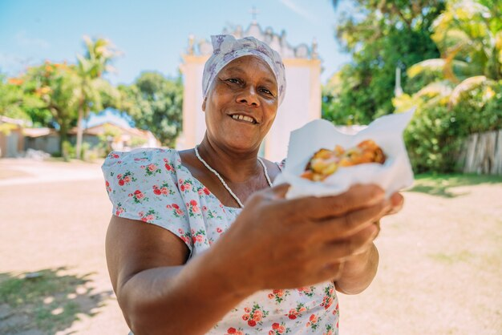

Chapada dos Veadeiros - GO
O Quilombo do Moinho, a 12 km de Alto Paraíso (GO), é conhecido pela biodiversidade, uso de ervas medicinais e produção orgânica em agroflorestas.
Paraty - RJ
No roteiro caiçara, os participantes visitarão a Comunidade da Ilha do Araújo, conhecendo seus costumes, igrejas, escola, casa de farinha, biblioteca e o artesanato local.
Caraíva - BA
Trata-se de um pequeno grupo familiar, que criou um Centro Cultural aberto aos visitantes em 2004 com intuito de promover a cultura indígena Pataxó.
Jatimane - BA
O Quilombo Jatimane, em Nilo Peçanha (BA), valoriza a história quilombola do Baixo Sul e oferece turismo de base comunitária com experiências culturais e históricas.
Jequitinhonha - MG
Aqui na Raízes Desenvolvimento Sustentável, fomentamos o turismo sustentável de base comunitária para que ele inspire e multiplique transformações nos territórios.
Região do baixo Rio Negro - AM
Desde 2003, o IPÊ desenvolve o projeto de Turismo de Base Comunitária no baixo Rio Negro, unindo conservação ambiental ao desenvolvimento regional.
 
